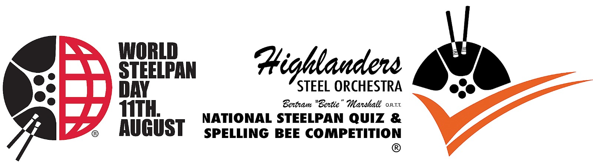

Launched in 2024 by the World Steelpan Thrust of Trinidad and Tobago and the Highlanders Steel Orchestra in honour of Highlanders Steel Orchestra's legendary leader and master pan-tuner, Bertram "Bertie" Marshall, O.R.T.T.